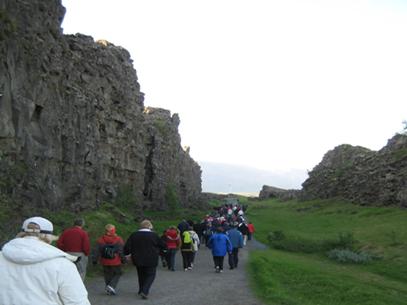

Upplifðu helstu náttúruperlur og sögustaði Íslands á einum degi.
Upplisingar
Gullni hringurinn er vinsælasta ferðaleið Íslands, um 250 til 300 kílómetra löng hringleið sem
býður
upp
á blöndu af sögu, jarðfræði og jarðhita. Helstu áfangastaðirnir á þessari leið eru Þingvellir
þjóðgarður, jarðhitasvæðið við Geysi og Gullfoss.
Þingvellir
Saga Íslands og íslensku þjóðarinnar kemur hvergi betur fram á einum stað en á Þingvöllum við
Öxará. Lesa meira

Geysir
Þessi frægasti og fyrrum stærsti goshver heims er talinn hafa myndazt við mikla
jarðskjálftahrinu í
lok 13. aldar. Lesa meira
Gullfoss
Gullfoss er í raun tveir fossar, efri fossinn er 11 metrar og neðri fossinn 20 metrar. Lesa meira